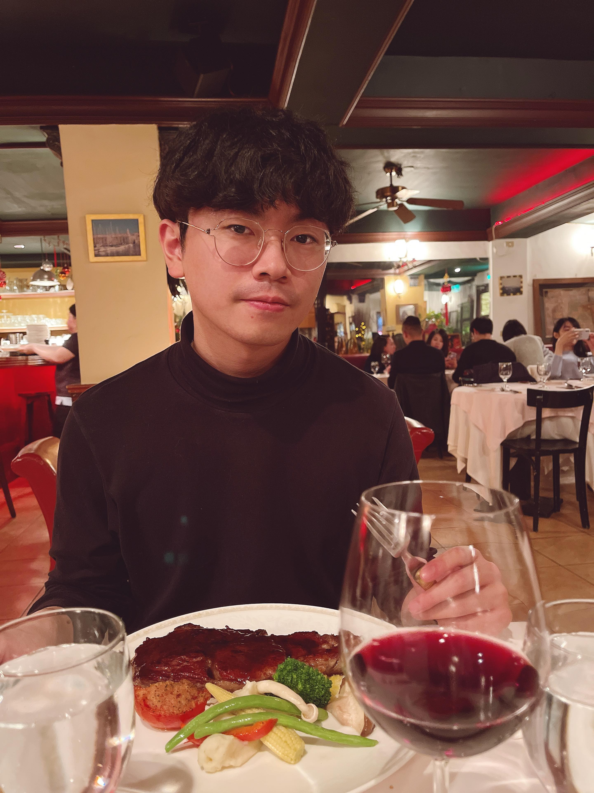

陳品勳 (CHEN, PIN-HSUN)
Higher Education
Master ,
Institute of Finance
,
National Chiao Tung University
Thesis:
Evaluation of Restricted Stock mixed Employee Stock Option Compensation using the Probability-Weighted Expected Utility model (RDEU)
Adviser: Prof.
Tian-Shyr, Dai
Talks and Presentations
財務數學4.2
ESO-0524meeting
ESO-0607meeting
ESO-0726meeting
CPT模型部分履約測試-0906meeting
Jain and Subramanian(2004)-0920meeting
Sun, L., & Widdicks, M. (2016). -0927meeting
ESO-1011meeting